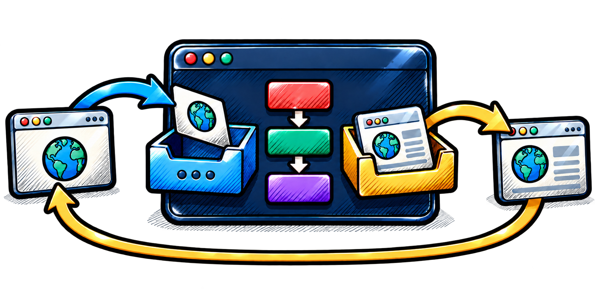
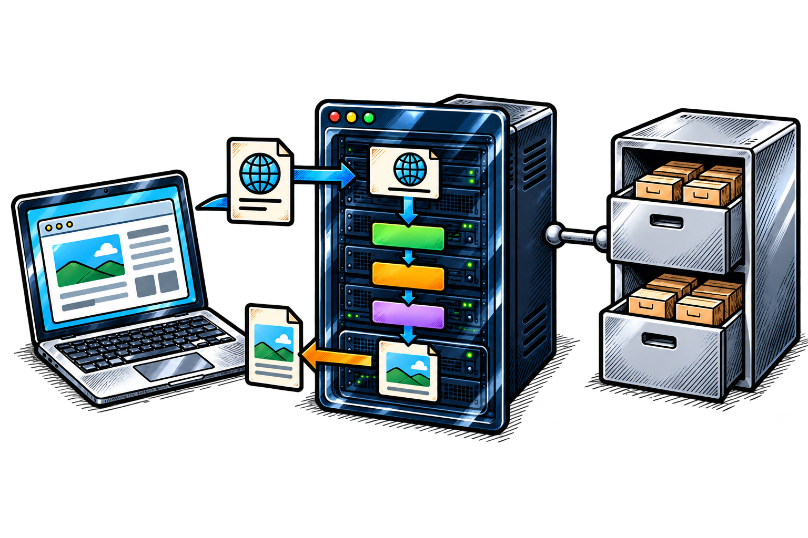
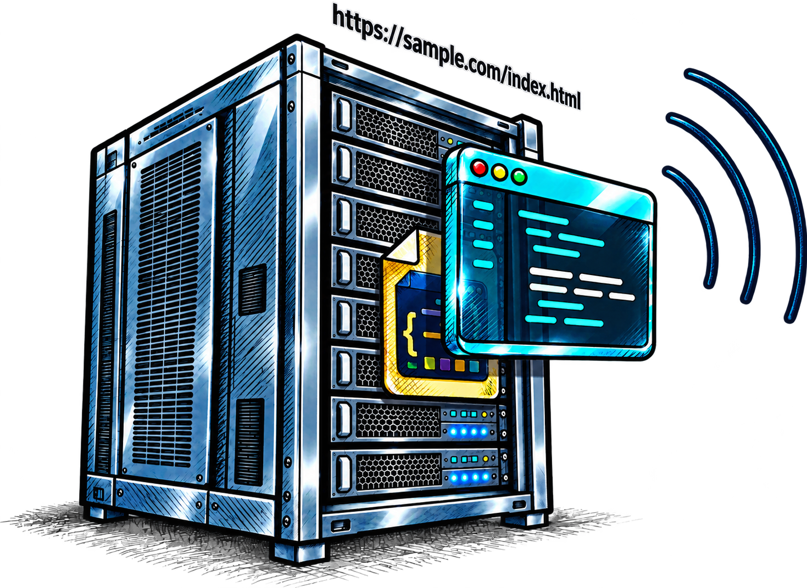
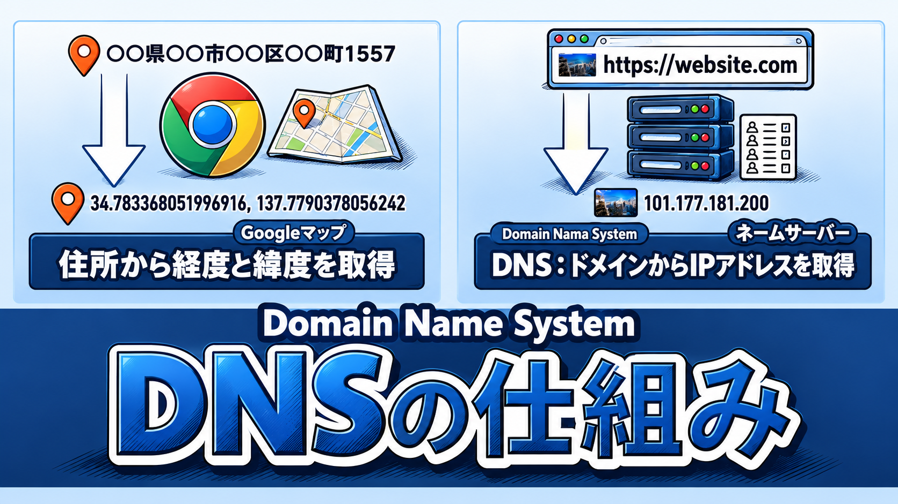

リクエスト
ブラウザやアプリがURLへ「これをください」とお願いを送ります。
SERVER / NETWORK / ADDRESS
画面から届いたリクエストを受け取り、データや画面を返すプログラムです。自分のPCでも、インターネット上でも動かせます。

01 / まず全体像
ブラウザやアプリがURLへ「これをください」とお願いを送ります。
サーバーはルールに従い、必要ならデータベースも参照します。
HTML、画像、またはJSONなどのデータを返します。
02 / STORAGE & SERVER
Server＝ 給仕するもの / 供給するもの
よくある説明Webサイトやオンラインのアプリを作ったら、見たり使ったりできるように、サーバーを開設（レンタル）して、そこへデータを置く（アップロードする）必要があります。
この説明は間違っていません。ただ、こう聞くと、サーバーはどこか遠くにあるデータの保管庫のように感じてしまいます。
置いておく場所
どこか遠くにあるデータの保管庫は、厳密にはこちらを指します。データを置いておくことが役目です。
求められたら差し出す役
要求に応じてデータを提供（Serve）するシステムのことです。具体的には、Apache HTTP Server（アパッチ）や nginx（エンジンエックス）といったプログラムがこの役をします。

つまりサーバーの本質は、こうしたプログラムによって、外部へデータを供給する窓口を設けたものです。
一般には、Webサイトや Webアプリのデータを保存したストレージと、サーバーのシステムをまとめて「Webサーバー」と呼んでいます。
ストレージ＋サーバーのプログラム＝Webサーバー
03 / LOCAL & LAN
サーバーがない状態と、サーバーを起動した状態をくらべます。起動する場所が自分のPCか、インターネット上かで、開ける相手が変わります。
サーバーがない状態
ネットワークを使わない
file:///…/index.html
HTMLファイルをダブルクリックして開いた状態です。ブラウザが自分のPCの中のファイルを直接読んでいるだけで、返事をするサーバーはいません。
データを取りに行く処理など、サーバーがないと動かない機能もあります。
開ける範囲このPCだけ
サーバー起動状態
LAN（同じWi-Fiの中）
http://localhost:3000 http://192.168.x.x:3000
自分のPCでサーバーのプログラムを起動した状態です。localhost は今使っているPC自身を指します。
同じWi-Fiにつないだ端末からは、PCのローカルIPアドレスで開けます。Windowsのターミナルで ipconfig を実行すると、IPv4アドレスを確認できます。
開ける範囲このPCと、同じLAN内の端末

グローバルネットワーク
https://example.com/index.html
インターネット上で常時動いているコンピューターで、サーバーのプログラムが待ち受けている状態です。一般に「サーバー」と呼ばれるのはこの形です。
公開には HTTPS、認証、監視なども必要になります。
開ける範囲インターネットにつながる世界中の端末
安全メモ：ローカルIPは同じLAN内だけの住所です。知らないネットワークで公開せず、Windowsファイアウォールの許可内容を確認してから試してください。
04 / IP ADDRESS & DOMAIN
リモートのサーバーを開くときに使う、IPアドレスとドメインの関係を見てみましょう。
Webページや Webアプリは、IPアドレスという数字の住所を持つコンピューターから公開されています。
203.0.113.10
でも、IPアドレスは人間には覚えにくく、どのサイトの番号なのかも見分けられません。
わかりやすい固有の名前を付けて、IPアドレスに対応させます。この名前がドメインです。
example.com
地図アプリに住所を入れると、緯度と経度に置きかえて場所を探してくれます。同じように、ブラウザにドメインを入れると、DNS（Domain Name System）というしくみが、対応するIPアドレスを調べてくれます。対応表を持っていて答えを返すのが、ネームサーバー（DNSサーバー）です。

example.comDNS が調べる →203.0.113.10
ドメインを覚えておけば、番号を知らなくても目的のサーバーにたどり着けます。
確認日：2026年10月11日
ページ内のURL、ドメイン、IPアドレスは説明用の例です。